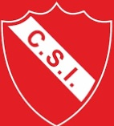

- Cancha de Futbol 11
- Estadio Cubierto para Basquet y Voley
- Cancha de Hockey
- Canchas de Tenis
- Gimnasio

Club Sportivo IndependienteDireccion: Av. San Martin 103Telefono: 02302 - 421932Fecha de fundacion: 20 de Agosto de 1920 |
 |
|
|